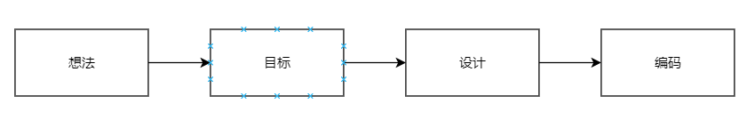
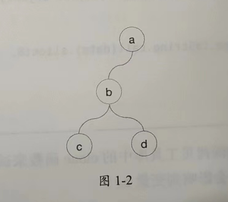
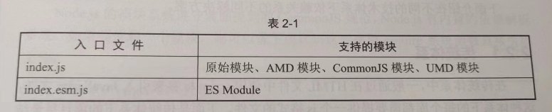
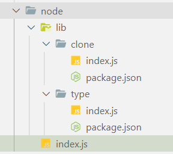

1. 从零开发一个JavaScript库
1.1 如何开始

如何确定要开发什么库呢?
- 从项目中寻找灵感,将项目中的一些功能进行抽象设计,提取通用逻辑,进行额外处理,形成一个公共库的原型;一般项目中也会存在一些公共函数和组件等,是很好的灵感来源
- 从开源项目中寻找灵感,改进或封装开源项目
- 记录闪现在脑海里的想法,时常翻看自己的想法清单
切忌好高骛远,个人精力有限,建议开发小而美、功能专一的库.
1.2 编写代码
先介绍深拷贝的含义.JavaScript中有8种基本数据类型(undefined、null、number、string、boolean、symbol、object、bigint),前6种数据类型的数据在赋值操作时都是值拷贝
值拷贝发生之后,两个变量之间就没有任何关联了
let a = 1
let b = a
a = 2 // 对a的修改不会影响变量b
console.log(a) // 2
console.log(b) // 1
而对象类型的数据在进行赋值操作时会发生引用拷贝,此时两个变量会指向相同数据,对其中一个变量进行操作会影响另一个变量
let a = { c: 1 }
let b = a
a.c = 2 // a的修改会影响b
console.log(a.c) // 2
console.log(b.c) // 2
对引用类型数据进完整复制的过程,称为深拷贝.我们提供一个函数来完成该功能
function clone(data){}
我们将对象类型数据看作一个树结构,a是根节点,引用类型对象b是中间结点,值类型属性c和d是叶子节点

这样就将深拷贝问题转化为树的遍历问题,常用遍历方法是深度优先遍历,一般使用递归实现
function clone(source) {
const t = type(source)
if (t !== 'object' && t !== 'array') {
return source
}
let target
if (t === 'object') {
target = {}
for (let i in source) {
if (source.hasOwnProperty(i)) {
target[i] = clone(source[i]) // !
}
}
} else {
target = []
for (let i = 0; i < source.length; i++) {
target[i] = clone(source[i]) // !
}
}
return target
}
上面的代码使用type函数获取数据的类型,该函数的原理是通过Object类中的toString方法获取数据的内部类型信息
function type(data) {
return Object.prototype.toString.call(data).slice(8, -1).toLowerCase();
}
测试深拷贝之后,a的修改会不会影响b(预期: 不会)
let a = { c: 1 }
let b = clone(a) // 深拷贝
a.c = 2
console.log(a.c) // 2
console.log(b.c) // 1
1.3 本章小结
本章介绍了从零开发JavaScript库的流程和基本方法,完成第一个版本的深拷贝工具库,但是当把代码分享给别人时,会面临以下问题:
- 小A使用了CommonJS模块,不知道该如何引用这个库
- 小B说这个库的代码在IE浏览器中会报错
2. 构建
2.1 模块化解析
ECMAScript 2015(又称ES6)带来了原生的模块规范,在此之前,js没有统一的模块化规范,其中影响力较大的如AMD和CommonJS,现在仍在广泛使用
2.1.1 什么是模块
随着程序规模的扩大,以及引入第三方库,共享全局作用域会带来很多问题,比如命名冲突,很多语言提供了解决方法
- c语言中的宏编译
- c++语言中的命名空间
- python中的模块
- java中的包
- php中的命名空间
js社区选择了模块方案,合格的模块方案需要满足以下特性:
- 独立性: 能够独立完成某个功能,隔绝外部环境的影响
- 完整性: 能够完成某个特定功能
- 可依赖: 可以依赖其他模块
- 被依赖: 可以被其他模块依赖
2.1.2 原始模块
从定义上看,一个函数即是一个模块,在es6(es 2015)之前,只有函数能创建作用域,下面是js社区中原始模块的代码:
(function (mod, $) {
function clone(source) {
// 具体逻辑
}
mod.clone = clone
})((window.clone = window.clone || {}), jQuery)
这里的mod模块不会被重复定义,依赖通过函数参数注入.但是这种实现并不完美,仍然需要手动维护依赖的顺序,比如这边传入的jQuery需要先于代码被引用,当模块越来越多,这种问题会变得不可维护
一般的库都有对这种模块的支持,因为这种模块可以直接通过script标签引入
2.1.3 AMD
AMD(Asynchronous Module Definition)是一种异步模块加载器,专为浏览器端设计,中文名称是异步模块定义,AMD规范中定义模块的方式如下:
define(id?, dependencies?, factory);
浏览器并不支持AMD模块,需要借助RequireJS才能加载.RequireJS是使用最广泛的AMD模块加载器,但是现在新系统一般不再使用RequireJS,而是使用库自带的支持
给我们的深拷贝库添加对AMD模块的支持
define(function () {
function clone(source) {
// 具体逻辑
}
return clone
})
这个代码定义了一个匿名AMD模块,假设代码位于clone.js,则在index.js里可以这样使用
define(['clone'], function(clone){
const a = { a: 1 }
const b = clone(b)
})
2.1.4 CommonJS
CommonJS是一种同步模块加载规范,主要用于nodejs环境中
define(function(require,exports,module){
// ...
})
在别的文件里使用
const clone = require("./lib/clone");
let a = { c: 1 };
let b = clone(a); // 深拷贝
2.1.5 UMD
Universal Module Definition,是一种通用模块加载规范,中文: 通用模块定义.它不是一种新规范,而是对前面介绍的3种规范的整合.支持UMD规范的库可以在任何模块环境中工作
(function (root, factory) {
var clone = factory(root);
if (typeof clone === 'function' && define.amd) {
// AMD
define('clone', function (clone) {
return clone
})
} else if (typeof exports === 'object') {
// CommonJS
module.exports = clone
} else {
// 原始模块
var _clone = root.clone
clone.noConflict = function () {
if (root.clone === clone) {
root.clone = _clone
}
return clone
}
root.clone = clone
}
})(this, function (root) {
function clone(source) {
// ...
}
return clone
})
可以看出,UMD规范就是进行了简单的整合,稍微不同的是,给原始模块添加了noConflict,用于解决全局名称冲突的问题
2.1.6 ES Module
ES6(2015)带来的原生模块系统.目前,部分浏览器支持直接使用ES Module,而不兼容的浏览器则通过构建工具来使用
ES Module只需要在函数面前加上export就可以
export function clone(source){
//
}
别的文件引用clone.js
import { clone } from './clone.js'
const a = { a: 1 };
const b = clone(a);
为了提高各种模块的支持,开源库可以提供两个入口文件

2.2 技术体系解析
2009年是前端技术体系的分水岭,nodejs的发布推动前端技术体系的发展,从”刀耕火种”迈入工具化时代,开源库需要支持不同的技术体系
场景: clone库有一个type函数,现在假设别的库也需要依赖type函数,于是将type函数抽象为一个库,此时有两个库,clone库依赖type库
一般一个js库都会依赖另外一些库,不同技术体系下,依赖关系有不同的解决方案
2.2.1 传统体系
一般是在HTML文件里用script标签引入JavaScript文件,这种体系下,每个库都要提供一个js文件
如果想使用一个库,需要想手动引入要用的库以及该库所依赖的库
<script src="lib/type.js"></script>
<script src="lib/clone.js"></script>
<script>
let a = {c:1}
let b = clone(a)
</script>
这种方式对大型库很不友好,使用者要手动引入很多文件,为了兼容传统体系,需要将所有代码及其依赖的库的代码合并成一个文件.也存在例外,比如jquery需要依赖jquery,react要依赖react
2.2.2 nodejs体系
nodejs遵循commonjs规范,内置依赖解析系统,使用require系统函数就可以依赖一个模块
const clone = require('./clone.js')
使用require引用文件时,被引用文件的路径需要遵循规则,引用支持相对路径、绝对路径、第三方包,如果忽略后缀,则会被当作nodejs的模块去解析
nodejs模块目录下需要有一个package.json文件,用于定义模块的一些属性.如果要新建模块,可以用npm工具快速初始化,然后在lib目录下新建并初始化clone模块
mkdir clone
cd clone
npm init
package.json里会有一个main字段,定义的是当前模块对应的逻辑入口文件,当该模块被其他模块引用时,nodejs会找到main字段对应的文件

在index.js里引入
const clone = require('./lib/clone')
let a = {c:1}
let b = clone(a)
nodejs体系下,只需要提供对commonjs或UMD模块的支持即可